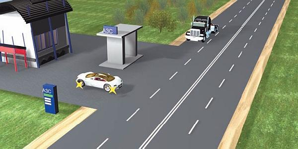
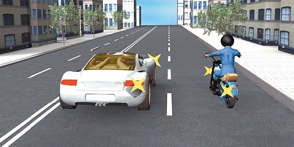
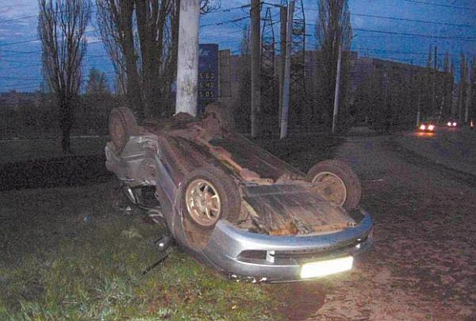
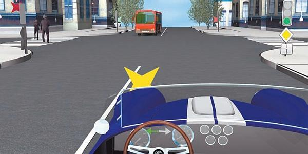
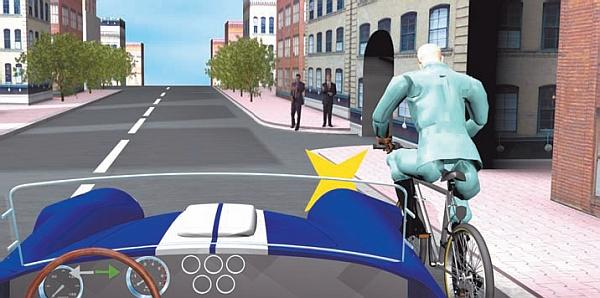
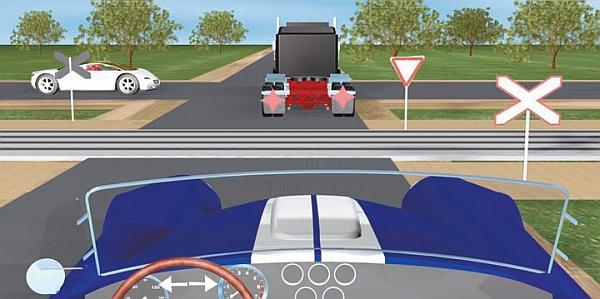
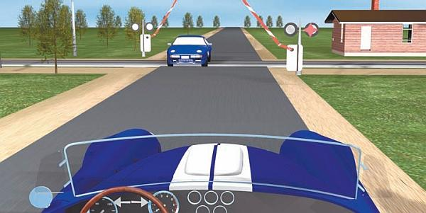
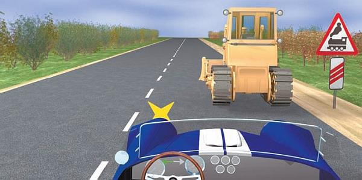
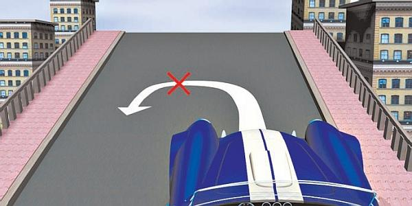

Виды дорожно-транспортных происшествий.
Каждая дорожная ситуация во многом индивидуальна, однако это не мешает классифицировать дорожно-транспортные происшествия по ряду характерных признаков. Рассмотрим основные виды аварий.
СтолкновениеСтолкновение – наиболее распространенный вид ДТП. Столкновения бывают лобовые, боковые, касательные, задние. Самыми опасными являются лобовые столкновения, происходящие с транспортными средствами, движущимися во встречных направлениях, когда один из водителей нарушил Правила дорожного движения (например, правила обгона). Особенностью лобовых столкновений является то, что они очень часто влекут гибель или тяжелые травмы и увечья людей.
Боковые столкновения часто случаются на перекрестках, когда один из водителей не уступил дорогу либо проехал на запрещающий сигнал светофора и т. д. (рис. 7.1).

Рис. 7.1. Боковые столкновения могут возникать и при выезде с прилегающих территорий
Касательные столкновения, как правило, происходят между транспортными средствами, движущимися в попутном направлении. Наиболее характерный пример – столкновение при перестроении, когда водитель перед выполнением маневра не убедился в отсутствии в непосредственной близости транспортных средств, движущихся по соседней полосе в попутном направлении (рис. 7.2).

Рис. 7.2. При одновременном перестроении действует правило «помехи справа»
К тяжелым последствиям такие дорожно-транспортные происшествия приводят, когда один из участников аварии – крупногабаритное транспортное средство (например, большой автобус «прижал» легковушку или мотоциклиста). В большинстве же случаев такие аварии ограничиваются не самым сильным повреждением транспортных средств. Виновником аварии чаще всего признается водитель, который выполнял перестроение.
Задние столкновения являются следствием несоблюдения безопасной дистанции водителем транспортного средства, движущегося позади другого автомобиля: водитель переднего автомобиля по каким-либо причинам (например, внезапное появление на проезжей части пешехода или иного препятствия и т. п.) начинает резко снижать скорость, а водитель автомобиля, едущего позади, не успевает должным образом на это отреагировать. Виновником в совершении подобных столкновений всегда признается водитель транспортного средства, двигавшегося позади.
Отличительная особенность задних столкновений в том, что они могут происходить с участием большого количества автомобилей, особенно при движении на скользкой дороге или в условиях плохой видимости. Происходит своего рода «цепная реакция»: вначале один автомобиль ударяет сзади другой, они останавливаются для разбора ситуации, затем кто-то «добавляет» виновнику аварии сзади и т. д. Известно немало случаев, когда подобным образом сталкивались и три, и пять, и даже больше транспортных средств. Задние столкновения часто случаются и при движении в плотном транспортном потоке и в пробках, иногда – при перестроениях (когда водитель, сменивший полосу движения, подрезает двигающийся сзади в попутном направлении автомобиль).
Опрокидывание транспортных средствВ большинстве случаев опрокидывания транспортных средств происходят на загородных трассах. В определяющей степени это обусловлено тем, что к опрокидыванию ведет езда на достаточно высокой скорости.
Опрокидывание является одним из самых опасных видов дорожно-транспортных происшествий (рис. 7.3). Во-первых, в процессе переворачивания автомобиля водитель и пассажиры могут серьезно пострадать или даже погибнуть. Во-вторых, опрокидывание может привести к возгоранию транспортного средства. Бывали случаи, когда в огне погибали не успевшие выбраться из машины пассажиры. В-третьих, при опрокидывании автомобиль может вынести куда угодно: на полосу встречного движения, на стоящее возле дороги дерево, столб, здание, в кювет, в глубокий овраг, в реку, на железнодорожные пути и т. д. По тяжести вероятных последствий опрокидывание стоит в одном ряду с лобовыми столкновениями и наездами на неподвижные препятствия (хотя, справедливости ради, отметим, что при лобовом столкновении шансов уцелеть меньше, чем при опрокидывании).

Рис. 7.3. Автомобиль опрокинулся и ударился в дерево
Опрокидывание может произойти по причине того, что водитель пытался избежать другого дорожно-транспортного происшествия. Одна из наиболее частых причин опрокидывания – резкий поворот руля при движении на высокой скорости (а именно это действие инстинктивно предпринимают многие водители при внезапном появлении препятствия на проезжей части в непосредственной близости от автомобиля). Иногда автомобиль опрокидывается по причине заноса на скользкой дороге, особенно когда одни колеса находятся на скользком покрытии, а другие – на нормальном.
Автомобиль также может опрокинуться при движении по плохой обочине: грунт под колесами проседает и машина сваливается в кювет. По этой же причине следует избегать попадания на мокрую грунтовую обочину (она может быть вязкой и ненадежной).
ПРИМЕЧАНИЕ
После опрокидывания автомобили часто не подлежат восстановлению, так как смещается геометрия кузова («едут» стойки, лонжероны), и ремонтировать автомобиль с финансовой точки зрения не имеет никакого смысла.
Часто причиной опрокидывания автомобилей становится лопнувшее переднее колесо. Как правило, это происходит при движении на высокой скорости (правда, на скользкой дороге или на повороте для опрокидывания достаточно и небольшой скорости). Когда лопается колесо, автомобиль резко дергается в сторону этого колеса, теряет устойчивость и переворачивается. Еще хуже, если во время движения колесо отрывается, так как в этом случае избежать опрокидывания практически невозможно.
Наезд на неподвижное препятствиеПо степени опасности наезд на неподвижное препятствие сопоставим с лобовым столкновением. Как правило, подобные дорожно-транспортные происшествия возникают по причине невнимательности водителя. Иногда, чтобы врезаться в столб, дерево, стоящее транспортное средство, стену здания, водителю достаточно отвлечься на долю секунды.
Если не пользоваться ремнем безопасности, то для летального исхода при наезде на неподвижное препятствие может хватить скорости автомобиля всего 40–50 километров в час. Основные травмы водитель получает при ударе грудью о рулевое колесо и головой о лобовое стекло. При этом и водителя, и сидящего рядом пассажира может выбросить через лобовое стекло, что приводит к многочисленным травмам, в большинстве случаев несовместимым с жизнью.
Существует точка зрения, что при наличии в автомобиле подушек безопасности ремнем можно не пользоваться. На самом деле без ремня безопасности никакая подушка не спасет. Например, она никак не помешает выбрасыванию силой инерции через лобовое стекло.
Многие наши соотечественники ездят на подержанных автомобилях иностранного производства. У большинства современных иномарок предусмотрено штатное комплектование подушками безопасности, но ведь не исключено, что подушки уже были использованы до вас. Это следует учесть.
Наезд на пешеходаНаезды на пешеходов относятся к числу самых распространенных дорожно-транспортных происшествий, причем большинство из них, к сожалению, заканчиваются трагически. Слишком уж неравными являются «весовые категории»: с одной стороны – тяжелый металлический автомобиль (средний легковой автомобиль весит около тонны), с другой – человек. Можно с уверенностью сказать, что, если последствия наезда ограничились для пешехода переломом руки или ноги, значит, ему просто повезло.
Следует отметить, что часто виновниками подобных дорожно-транспортных происшествий являются сами пешеходы. Не секрет, что многие наши соотечественники любят перейти дорогу на запрещающий сигнал светофора либо сделать это в неположенном месте, к тому же неожиданно для других участников дорожного движения. При этом они совершенно не задумываются над тем, что движущийся даже на небольшой скорости автомобиль мгновенно остановить невозможно.
Как уже отмечалось выше, особо опасны на дорогах дети, пешеходы преклонного возраста, а также пьяные пешеходы. Представитель любой из этих категорий может появиться на проезжей части прямо перед машиной, совершенно не задумываясь о возможных последствиях.
Каждый водитель при приближении к пешеходному переходу должен обязательно снизить скорость движения и проявить максимальную бдительность (рис. 7.4). Даже если на светофоре горит зеленый свет, помните, что дисциплинированность наших пешеходов оставляет желать лучшего и всегда может найтись тот, кто захочет перебежать дорогу на красный свет.

Рис. 7.4. На перекрестке водитель должен пропустить пешеходов
Правда, и водители часто отличаются недисциплинированностью. Часто доводится видеть, как кто-то из них пытается проскочить перекресток на запрещающий сигнал светофора, не пропускает пешеходов на нерегулируемом пешеходном переходе или нетерпеливо газует, подгоняя неторопливо переходящую дорогу мамашу с коляской.
Часто при наездах пешеходы гибнут не от удара автомобиля, а от последствий этого удара, например от удара головой о бордюр или асфальт. При наезде человек может получить несмертельные травмы (перелом, сильный ушиб и т. п.), но, отлетев от автомобиля, он ударяется головой обо что-нибудь твердое и от этого погибает. Пешеход также может погибнуть от удара головой о кузов либо лобовое стекло автомобиля.
Иногда наезды на пешеходов случаются в ситуациях, когда ни водитель, ни пешеход не планировали нарушать Правила дорожного движения. Например, когда идущий по краю тротуара человек оступается и падает на проезжую часть прямо под колеса проезжающего мимо автомобиля. В подобной ситуации даже при движении на небольшой скорости водитель не в состоянии вовремя среагировать.
Наезд на велосипедистаПо степени непредсказуемости поведения на дороге велосипедистов можно сравнить с пешеходами. Несмотря на то что они движутся по проезжей части и участвуют в движении наравне со всеми, большинство велосипедистов толком не знает Правил дорожного движения. Кроме того, для них характерны такие черты, как невнимательность и беспечность (рис. 7.5).

Рис. 7.5. Велосипедист на дороге – потенциальный источник опасности
Последствия наездов на велосипедистов обычно примерно такие же, как и при наезде на пешеходов. Поскольку большинство велосипедистов ездят без шлемов, они часто погибают от удара головой о твердые поверхности (бордюр, асфальт) либо о транспортные средства.
ПРИМЕЧАНИЕ
Особое внимание следует уделять велосипедистам, у которых на велосипеде отсутствуют зеркала заднего вида, так как они практически не контролируют дорожную ситуацию позади себя.
Часто велосипедисты резко и без предупреждения изменяют направление движения, что является полной неожиданностью для водителей транспортных средств. К тому же велосипед – это не самое устойчивое транспортное средство, поэтому велосипедист может упасть при наезде на небольшое препятствие (камень, яму или выбоину на дороге). Водитель находящегося в непосредственной близости автомобиля, скорее всего, просто не успеет среагировать на такое падение.
Многие велосипедисты пренебрегают элементарными нормами безопасности, отправляясь в дорогу в темное время суток без световозвращающих элементов. В результате водитель автомобиля замечает велосипед слишком поздно, когда предотвратить столкновение уже невозможно.
Особую бдительность следует проявлять по отношению к велосипедистам-детям, так как их поведение на дороге абсолютно непредсказуемо. Часто на одном велосипеде едут двое и даже больше детей, что самым неблагоприятным образом сказывается на безопасности их движения. Имейте в виду, что ребенок, которого везут на раме или на багажнике, в любой момент может расставить в стороны руки или ноги, совершенно не задумываясь о том, что сзади может ехать автомобиль.
Часто дети едут по проезжей части на велосипеде, не держась при этом за руль. В таких случаях достаточно небольшого камешка или любого другого предмета, попавшего под колесо, чтобы велосипедист упал. Если вы видите, что перед вашим автомобилем на велосипеде, отпустив руль, едет ребенок, объезжайте его с таким запасом расстояния, чтобы даже при падении он не достал до вашего автомобиля.
Часто на дороге встречаются пьяные велосипедисты. От них можно ожидать чего угодно: и неожиданного падения, и внезапного перестроения прямо перед вашим автомобилем, и резкого маневра. Их также нужно объезжать на таком расстоянии, чтобы они при падении или выполнении резкого маневра не смогли достать до вашего автомобиля.
Столкновение с железнодорожным транспортомОсобенность дорожно-транспортных происшествий, случившихся на железнодорожном переезде, состоит в том, что одним участником является автомобильный, а другим железнодорожный транспорт.
Редкая авария, случившаяся на железнодорожном переезде, обходится без тяжелейших увечий или гибели находящихся в автомобиле людей. Неудивительно, ведь движущийся на скорости железнодорожный состав мгновенно остановить невозможно (его тормозной путь нередко составляет более километра). Поэтому автомобиль либо ударом отбрасывает с железнодорожных путей (это, кстати, не самый худший вариант), либо какое-то расстояние поезд тащит его по путям до полной остановки (при этом выжить практически невозможно).
Подавляющее большинство дорожно-транспортных происшествий, случившихся на железнодорожных путях, возникает по причине недисциплинированности или вопиющей невнимательности водителей автомобилей. Реже такие аварии происходят из-за ошибок работников железнодорожных переездов (например, открытый шлагбаум при приближающемся поезде либо не включенный своевременно запрещающий сигнал на светофоре) или действий машинистов. Иногда причиной аварии может быть технический сбой (светофор не запрещал движения автомобилей через железнодорожный переезд, хотя в непосредственной близости уже находился едущий на высокой скорости состав).
ВНИМАНИЕ
Даже если движение через железнодорожный переезд разрешено, подъезжайте к нему на малой скорости, перед въездом на пути внимательно посмотрите в обе стороны. Железнодорожный состав приближается практически бесшумно, а в автомобиле вы тем более ничего не услышите. Если вы уже въехали на рельсы и в это время заметили приближающийся состав, ни в коем случае не пытайтесь затормозить, иначе вы остановитесь прямо на рельсах, перегородив путь поезду (именно эту ошибку инстинктивно допускают многие водители). Лучше увеличьте скорость и максимально быстро постарайтесь покинуть железнодорожное полотно. Если перед вами стоит другой автомобиль, либо постарайтесь объехать его, либо срочно останавливайтесь и сдавайте назад (рис. 7.6).

Рис. 7.6. В данной ситуации на переезд лучше не въезжать – впереди стоит грузовик
Помните, что в экстренной ситуации ваша задача – как можно быстрее покинуть железнодорожные пути. Возможно, впереди стоящий автомобиль не позволит вам покинуть переезд полностью, но имеющегося до него расстояния будет достаточно для того, чтобы съехать именно с тех рельсов, по которым движется поезд.
Если для того, чтобы покинуть рельсы, придется пойти на столкновение со стоящим впереди или сзади транспортным средством – ничего страшного, самое плохое, если вы попадете под проходящий поезд. Главное, чтобы удар не был слишком сильным и вашу машину не отбросило назад на рельсы.
Если съехать с железнодорожных путей невозможно, а поезд уже близко – немедленно высаживайте из машины пассажиров и покидайте ее сами. В данном случае необходимо прежде всего сохранить жизнь и здоровье людей, а потеря автомобиля – это меньшее из зол.
На железнодорожном переезде преимущество всегда имеет поезд. Если переезд регулируемый, то при приближении поезда будет подан запрещающий сигнал или закроется шлагбаум (однако даже при открытом переезде вы должны лично убедиться в отсутствии приближающегося состава). Особо внимательными следует быть на нерегулируемых переездах.
В соответствии с Правилами дорожного движения въезд на железнодорожный переезд запрещен:
> при закрытом или начинающем закрываться шлагбауме (независимо от сигнала светофора) (рис. 7.7);

Рис. 7.7. Въезд на пути при закрывающемся шлагбауме может привести к трагедии
> при запрещающем сигнале светофора (независимо от положения и наличия шлагбаума);
> при запрещающем сигнале дежурного по переезду (дежурный обращен к водителю грудью или спиной с поднятым над головой жезлом, красным фонарем или флажком либо с вытянутыми в сторону руками);
> если за переездом образовался затор, который вынудит водителя остановиться на переезде;
> если к переезду в пределах видимости приближается поезд (локомотив, дрезина).
Кроме того, запрещено объезжать стоящие на железнодорожном переезде транспортные средства с выездом на полосу встречного движения и самовольно открывать или закрывать шлагбаум.
Когда движение через железнодорожный переезд запрещено, вы должны остановить машину либо у стоп-линии, либо у дорожного знака 2.5 «Движение без остановки запрещено», либо непосредственно перед светофором (в зависимости от того, что имеется на данном переезде). Если перед переездом нет ни разметки, ни знака, ни светофора, нужно остановиться не ближе чем за 5 метров перед шлагбаумом, а если и шлагбаума нет – не ближе чем за 10 метров до ближайшего рельса.
Иногда бывает, что водитель вынужденно останавливается на железнодорожном переезде (например, машина неожиданно заглохла или образовался затор). В этом случае, как уже отмечалось выше, необходимо немедленно высадить всех пассажиров, а также предпринять все возможные меры для максимально быстрого освобождения переезда (например, можно попросить водителей других автомобилей столкнуть вашу машину с путей, разумеется, при отсутствии в непосредственной близости поезда). Кроме того, Правила дорожного движения в подобной ситуации предписывают следующий порядок действий:
> при имеющейся возможности послать двух человек вдоль путей в обе стороны от переезда на 1000 метров (если одного, то в сторону худшей видимости пути), объяснив им правила подачи сигнала остановки машинисту приближающегося поезда;
> оставаться возле транспортного средства и подавать сигналы общей тревоги;
> при появлении поезда бежать ему навстречу, подавая сигнал остановки.
Не все водители знают, что сигналом остановки служит круговое движение руки (днем – лоскутом яркой материи или каким-либо хорошо видимым предметом, ночью – факелом или фонарем). Сигналом общей тревоги служат серии из одного длинного и трех коротких звуковых сигналов.
На железнодорожных переездах и ближе чем за 100 метров перед ними запрещено выполнение обгона (рис. 7.8).

Рис. 7.8. Ближе 100 метров перед железнодорожным переездом обгон запрещен
Кроме того, на переездах запрещены остановка и стоянка транспортных средств, а стоянка запрещена еще и ближе 50 метров перед железнодорожным переездом.
Падение с мостов и путепроводовК числу тяжелых дорожно-транспортных происшествий относятся падения транспортных средств с мостов и путепроводов. Такие аварии редко обходятся без жертв, и почти никогда – без тяжелых травм и увечий людей.
Основной причиной подобных происшествий является невнимательность водителей. Иногда бывает достаточно отвлечься буквально на секунду – и контроль над дорожной ситуацией будет потерян, а автомобиль вынесет за пределы моста. Часто это случается при прикуривании, разговоре по мобильному телефону, поиске радиостанции, смене аудиокассеты и т. д.
Иногда водитель, пытаясь избежать столкновения с другим транспортным средством, инстинктивно поворачивает руль к правому краю проезжей части, что может привести к падению автомобиля с моста. В некоторых случаях падение является следствием неумело выполненного разворота (напомним, что в соответствии с п. 8.11 ПДД на мосту разворачиваться запрещено) (рис. 7.9).

Рис. 7.9. Разворот на мосту категорически запрещен
Наиболее тяжкие последствия отмечаются при падении транспортных средств с большой высоты, а также в реку или иную водную преграду. Как правило, в подобных случаях никто не выживает.
Еще хуже, если автомобиль падает с моста или путепровода на находящуюся внизу проезжую часть, так как пострадают не только находящиеся в упавшем автомобиле люди, но и те, кто ехал по этой дороге. Тяжелейшие последствия наступают в результате падения транспортных средств на железнодорожные пути (чревато даже сходом поезда с рельсов).
Иногда автомобиль выносит с моста в результате того, что у него лопнуло либо оторвалось колесо (в первую очередь это относится к передним колесам). Причем если при лопнувшем колесе у водителя есть шансы удержать автомобиль на проезжей части и остановиться (особенно при движении на небольшой скорости), то при оторвавшемся колесе эти шансы минимальны.
Нередко транспортные средства падают с мостов и путепроводов в условиях плохой видимости, когда водитель плохо видит край проезжей части и вообще с трудом ориентируется на дороге, а также при движении по скользкой дороге (во время дождя, в гололед и т. д.).
ВНИМАНИЕ
Особую осторожность следует соблюдать при движении по мостам и путепроводам в холодное время года. Дело в том, что они покрываются льдом раньше, чем обычная дорога, а сходит этот лед позже. Иногда мосты и путепроводы могут быть покрыты льдом даже тогда, когда на всех остальных дорогах лед полностью отсутствует.
При движении по мостам и путепроводам не следует слишком прижиматься к правому краю проезжей части, особенно если там нет ограничивающего высокого бордюра, придорожных столбиков или ограждений. Перед имеющимся на мосту крутым поворотом необходимо заблаговременно уменьшить скорость, особенно при движении по скользкой дороге.
Падение перевозимых грузов на проезжую частьНемногие знают, что такое, казалось бы, не самое серьезное происшествие, как падение грузов, на самом деле может привести к самым трагичным последствиям.
В большинстве случаев падение грузов происходит по причине того, что они были плохо закреплены. Это иногда случается и из-за перегруженности автомобиля, халатности ответственных за перевозку должностных лиц, нарушения водителем Правил дорожного движения.
Падение грузов опасно в первую очередь тем, что это является полнейшей неожиданностью для других участников дорожного движения. Представьте себе такую ситуацию: вы движетесь вслед за грузовым автомобилем, перевозящим кирпич или строительные блоки. Если из кузова грузовика выпадет даже один кирпич и попадет вам на лобовое стекло, последствия могут быть самыми тяжелыми. Во-первых, сильнейший удар придется либо на водителя, либо на пассажира переднего сиденья (кирпич не просто упадет – сила его падения многократно увеличится за счет скорости вашего автомобиля, то есть вы просто налетите на него). Во-вторых, поведение водителя автомобиля, пострадавшего от падения кирпича, будет абсолютно непредсказуемым (он может потерять сознание, инстинктивно вывернуть руль на полосу встречного движения, резко затормозить и т. д.).
Но это еще не самый плохой вариант. Известны случаи, когда с грузовика, перевозящего листовой металл, сползал плохо закрепленный лист металла и в буквальном смысле слова «срезал» переднюю часть следующего позади легкового автомобиля. Очень опасными также являются грузовые автомобили, перевозящие бревна: плохо закрепленное бревно при падении может ударить следующий позади автомобиль.
Но опасаться нужно не только попутных, но и встречных грузовиков. Например, даже если упавший груз упадет не на ваш автомобиль, а просто останется лежать на проезжей части, он будет представлять собой внезапно возникшее препятствие. Это потребует от водителей проходящих транспортных средств немедленного реагирования, и не факт, что все они предпримут правильные действия. Кто-то инстинктивно попытается для объезда выехать на полосу встречного движения, кто-то резко затормозит, кто-то вообще может запаниковать и повести себя непредсказуемо.
В общем случае, если груженый автомобиль находится перед вами, его рекомендуется побыстрее обогнать (разумеется, при наличии такой возможности и с соблюдением необходимых мер предосторожности, не нарушая Правил дорожного движения). Если это невозможно, имеет смысл отстать от него, чтобы в случае необходимости успеть среагировать на внезапное падение груза. Если груженый автомобиль движется вам навстречу, старайтесь при разъезде держаться от него подальше.
Особую опасность представляют собой крупногабаритные грузовые автомобили, перевозящие бетонные плиты в вертикальном положении. Известны случаи, когда плохо закрепленная плита падала прямо на проходящий рядом легковой автомобиль, что приводило к гибели всех находящихся в нем пассажиров.
Некоторые грузы, выпав из кузова перевозящего их автомобиля, не просто падают на проезжую часть, а какое-то время по инерции движутся по ней, при этом нередко подпрыгивая и меняя направление движения самым непредсказуемым образом (таким грузом, например, может быть мягкая мебель).